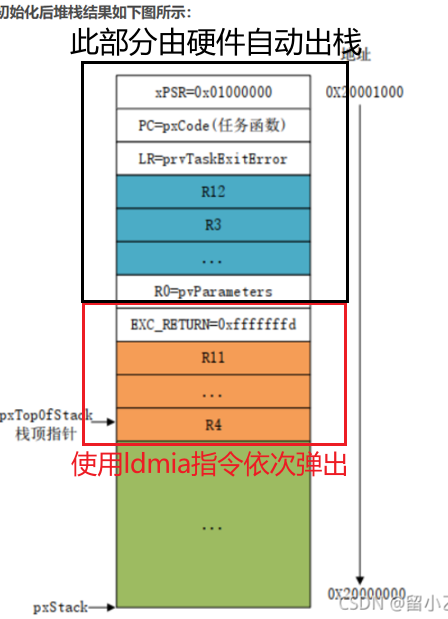

版权信息
warning
本文章为博主原创文章。遵循 CC 4.0 BY-SA 版权协议，转载请附上原文出处链接和本声明。
1. 甘、文、崔：三个重要的中断
在FreeRTOS中，使用三个宏重写了中断，他们一般定义在与硬件相关的 port.c 中。
例如 /portable/GCC/ARM_CM4F/port.c。
注意还有一个文件夹叫
/portable/GCC/ARM_CM4_MPU/port.c。这是带内存保护单元MPU的版本，由于添加了内存保护功能，实现较为复杂，上下文开销也大。一般用在对安全性要求极高的产品上，比如医疗和车规级产品。一般产品不建议使用。
void xPortPendSVHandler( void ) __attribute__( ( naked ) );
void xPortSysTickHandler( void );
void vPortSVCHandler( void ) __attribute__( ( naked ) );
__attribute__( ( naked ) )告知编译器这个函数是“裸体”的，不要给他“穿衣服”（即给他添加额外的汇编代码）
1.1 SVC_Handler
—— Supervisor Call，系统服务调用。
它在RTOS中仅被调用一次，用来启动第一个任务。
芯片复位上电，默认运行在特权模式下，并且使用的是 MSP（主栈指针）。（我们在1里讲的双栈模式）但我们前面说过，RTOS 的任务必须使用自己的私有栈，也就是必须切换到 PSP（进程栈指针） 去运行。
标准做法就是使用SVC。省流：vTaskStartScheduler() 通过触发 svc 0 指令进入到了SVC中断。
如果对具体的调用链感兴趣可点击展开查看细节，篇幅原因折叠了
void vTaskStartScheduler( void )
{
BaseType_t xReturn;
xReturn = prvCreateIdleTasks();
#if ( configUSE_TIMERS == 1 )
{
if( xReturn == pdPASS )
{
xReturn = xTimerCreateTimerTask();
}
else
{
mtCOVERAGE_TEST_MARKER();
}
}
#endif /* configUSE_TIMERS */
/* The return value for xPortStartScheduler is not required
* hence using a void datatype. */
( void ) xPortStartScheduler();
}
可以看出，开始调度函数一般就做这些事：
- 创建空闲任务
- 如果使用了定时器，则创建定时器守护函数
- 调用
xPortStartScheduler()，这个函数又与硬件强相关
我们来看 /portable/GCC/ARM_CM4F/port.c 中的 xPortStartScheduler()
...
/* Start the first task. */
prvPortStartFirstTask();
...再看 prvPortStartFirstTask()，可以看到已经到汇编了，最重点的就是 svc 0 这个指令，直接触发了SVC中断。
static void prvPortStartFirstTask( void )
{
/* Start the first task. This also clears the bit that indicates the FPU is
* in use in case the FPU was used before the scheduler was started - which
* would otherwise result in the unnecessary leaving of space in the SVC stack
* for lazy saving of FPU registers. */
__asm volatile (
" ldr r0, =0xE000ED08 \n" /* Use the NVIC offset register to locate the stack. */
" ldr r0, [r0] \n"
" ldr r0, [r0] \n"
" msr msp, r0 \n" /* Set the msp back to the start of the stack. */
" mov r0, #0 \n" /* Clear the bit that indicates the FPU is in use, see comment above. */
" msr control, r0 \n"
" cpsie i \n" /* Globally enable interrupts. */
" cpsie f \n"
" dsb \n"
" isb \n"
" svc 0 \n" /* System call to start first task. */
" nop \n"
" .ltorg \n"
);
}
那在SVC中断里具体做什么呢？我们查看SVC回调函数的实现细节：
void vPortSVCHandler( void ) __attribute__ (( naked ));
void vPortSVCHandler( void )
{
__asm volatile (
/* 1. 找到当前最高优先级任务的 TCB 指针 */
" ldr r3, pxCurrentTCBConst2 \n" /* r3 = &pxCurrentTCB (获取指针变量本身的物理地址) */
" ldr r1, [r3] \n" /* r1 = pxCurrentTCB (解引用，拿到当前 TCB 的首地址) */
/* 2. 读取 TCB 的第一个成员：pxTopOfStack */
" ldr r0, [r1] \n" /* r0 = TCB的首个4字节数据，即之前伪造好的栈顶指针 */
/* 3. 手动出栈：恢复属于软件管理的寄存器 (R4-R11) 以及 EXC_RETURN (R14) */
" ldmia r0!, {r4-r11, r14} \n" /* 从 r0 指向的栈内存中，连续弹出数据到 r4-r11 和 r14。 */
/* 4. 移交栈指针给硬件 PSP */
" msr psp, r0 \n" /* 将 r0 赋值给 CPU 的进程栈指针 (PSP) */
" isb \n" /* 指令同步屏障：清空流水线，强制 CPU 确认 PSP 已经更新 */
/* 5. 打开中断总开关 */
" mov r0, #0 \n"
" msr basepri, r0 \n" /* 清零 BASEPRI 寄存器，允许所有优先级的中断触发 */
/* 6. 神奇的异空间跳跃：触发硬件自动出栈 */
" bx r14 \n" /* 跳转到 r14 (LR) 寄存器里的特殊地址，触发中断返回 */
" \n"
" .align 4 \n"
"pxCurrentTCBConst2: .word pxCurrentTCB \n"
);
}简单来说，就是做了这么几件事：
- 通过
pxCurrentTCB找到第一个任务的栈顶指针。 - 将 CPU 的栈指针（PSP）指向这个栈顶。
- 执行出栈操作（POP），把我们在
pxPortInitialiseStack里伪造的PC、R0等寄存器弹到 CPU 里。 - 汇编执行
bx r14（返回指令）。跳到了第一个任务的代码去执行了。
新入栈的元素总是在栈顶，出栈总是栈顶元素出，是曰“后进先出”。
一些细节的说明：
- 对于汇编指令的含义，这里就不多赘述。
- 关于硬件自动出栈，我也没太搞明白，我只知道R14里的0xFFFFFFFD是有特殊含义的，当 CPU 执行到最后一句
bx r14时，它发现 R14 里面装的是0xFFFFFFFD，会知道要使用PSP而且会硬件层面出栈。

至此，第一个任务的运行现场已准备就绪，开始运行了！
1.2 SysTick_Handler
——决策者。
SysTick 是 RTOS 的心跳，通常每 1 毫秒触发一次。它的核心职责是处理时间逻辑并做出调度决策，但绝对不亲自执行上下文切换。来看看其核心代码：
void SysTick_Handler(void)
/*The SysTick runs at the lowest interrupt priority*/
{
// 1. 屏蔽中断，保护 OS 内部数据结构
uint32_t ulPreviousMask = portSET_INTERRUPT_MASK_FROM_ISR();
// 2. 更新系统时间 (xTickCount++)，检查有没有延时到期的任务
if( xTaskIncrementTick() != pdFALSE )
{
//向硬件寄存器（ICSR）的特定位写 1，请求触发 PendSV 中断。
portNVIC_INT_CTRL_REG = portNVIC_PENDSVSET_BIT;
}
// 4. 恢复中断屏蔽
portCLEAR_INTERRUPT_MASK_FROM_ISR( ulPreviousMask );
}就一个核心函数 xTaskIncrementTick() 做了很多事：
-
维持系统时间： 每次触发，将 FreeRTOS 的全局系统节拍计数器（
xTickCount）加 1。 -
唤醒阻塞任务： 检查
pxDelayedTaskList（延时链表）。如果有任务的等待时间到了（比如vTaskDelay(100)结束，或者等待的超时时间到了），SysTick 负责把它从阻塞链表移到就绪链表（pxReadyTasksLists）。 -
时间片轮转裁决： 如果开启了时间片，SysTick 会检查当前运行任务的同优先级下，是否有其他任务也在就绪状态。如果有，说明当前任务的“1 毫秒配额”用完了，该换人了。
这个函数比较长，我们还是看一些核心的部分:
1. 增加计时器值，以及判断时钟是否溢出，若溢出则切换阻塞链表指针（第2节讲的）的部分
/* Tick increment should occur on every kernel timer event. Core 0 has the
* responsibility to increment the tick, or increment the pended ticks if the
* scheduler is suspended. If pended ticks is greater than zero, the core that
* calls xTaskResumeAll has the responsibility to increment the tick. */
if( uxSchedulerSuspended == ( UBaseType_t ) 0U )
{
/* Minor optimisation. The tick count cannot change in this
* block. */ //1，增加计数
const TickType_t xConstTickCount = xTickCount + ( TickType_t ) 1;
/* Increment the RTOS tick, switching the delayed and overflowed
* delayed lists if it wraps to 0. */
xTickCount = xConstTickCount;
if( xConstTickCount == ( TickType_t ) 0U )
{
taskSWITCH_DELAYED_LISTS();//2，切换链表指针
}
else
{
mtCOVERAGE_TEST_MARKER();
}
2. 唤醒阻塞任务的部分
/* See if this tick has made a timeout expire. Tasks are stored in
* the queue in the order of their wake time - meaning once one task
* has been found whose block time has not expired there is no need to
* look any further down the list. */
if( xConstTickCount >= xNextTaskUnblockTime )
{
for( ; ; )
{
if( listLIST_IS_EMPTY( pxDelayedTaskList ) != pdFALSE )
{
/* The delayed list is empty. Set xNextTaskUnblockTime
* to the maximum possible value so it is extremely
* unlikely that the
* if( xTickCount >= xNextTaskUnblockTime ) test will pass
* next time through. */
//如果没有阻塞任务，则将其设为最大值，以便不进入大if判断中，而这个xNextTaskUnblockTime是个全局变量，有阻塞任务时会更新
xNextTaskUnblockTime = portMAX_DELAY;
break;
}
else
{
/* The delayed list is not empty, get the value of the
* item at the head of the delayed list. This is the time
* at which the task at the head of the delayed list must
* be removed from the Blocked state. */
/* MISRA Ref 11.5.3 [Void pointer assignment] */
/* More details at: https://github.com/FreeRTOS/FreeRTOS-Kernel/blob/main/MISRA.md#rule-115 */
/* coverity[misra_c_2012_rule_11_5_violation] */
pxTCB = listGET_OWNER_OF_HEAD_ENTRY( pxDelayedTaskList );
xItemValue = listGET_LIST_ITEM_VALUE( &( pxTCB->xStateListItem ) );
if( xConstTickCount < xItemValue )
{
/* It is not time to unblock this item yet, but the
* item value is the time at which the task at the head
* of the blocked list must be removed from the Blocked
* state - so record the item value in
* xNextTaskUnblockTime. */
//记录所有任务中离就绪时间最短的
xNextTaskUnblockTime = xItemValue;
break;
}
else
{
mtCOVERAGE_TEST_MARKER();
}
/* It is time to remove the item from the Blocked state. */
listREMOVE_ITEM( &( pxTCB->xStateListItem ) );
/* Is the task waiting on an event also? If so remove
* it from the event list. */
if( listLIST_ITEM_CONTAINER( &( pxTCB->xEventListItem ) ) != NULL )
{
listREMOVE_ITEM( &( pxTCB->xEventListItem ) );
}
else
{
mtCOVERAGE_TEST_MARKER();
}
/* Place the unblocked task into the appropriate ready
* list. */
//加入就绪链表
prvAddTaskToReadyList( pxTCB );3. 同优先级的时间片轮询
/* Tasks of equal priority to the currently running task will share
* processing time (time slice) if preemption is on, and the application
* writer has not explicitly turned time slicing off. */
#if ( ( configUSE_PREEMPTION == 1 ) && ( configUSE_TIME_SLICING == 1 ) )
//本质就是判断链表长度嘛
{
#if ( configNUMBER_OF_CORES == 1 )
{
if( listCURRENT_LIST_LENGTH( &( pxReadyTasksLists[ pxCurrentTCB->uxPriority ] ) ) > 1U )
{
xSwitchRequired = pdTRUE;
}
else
{
mtCOVERAGE_TEST_MARKER();
}
}最后：
-
下达切换指令（悬起 PendSV）： 当 SysTick 经过上述计算，发现需要进行任务切换时（无论是同级轮转，还是唤醒了更高优先级的任务），它只会做一件事：向硬件寄存器（ICSR）的特定位写 1，请求触发 PendSV 中断。然后 SysTick 就直接返回退出了。
-
如果高优先级IRQ经常打断systick，会不会导致时钟不准？
只要你的IRQ写的符合标准，比如不要做长时间的逻辑，一般不会，只会有时间抖动。因为我们有硬件计数器兜底。硬件计数器的时间是绝对准确的，这次systick中断稍微延后了，下一次依然会准时触发。
1.3 ⭐PendSV_Handler
——可悬起的系统调用。上下文切换的核心
PendSV（可悬起的系统调用），它是一种CPU系统级别的异常，它可以像普通外设中断一样被悬起，而不会像SVC服务那样，因为没有及时响应处理，而触发Fault。所以PendSV的最大特点就是，它是系统级别的异常，但它又支持挂起。
- 触发时机：被 SysTick 触发，或者任务调用
TaskYield()、TaskDelay()时主动触发。 - 存在的意义： 保存上一个任务的现场，恢复下一个任务的现场。
here are some question，hope they can help you understand PendSV better：
-
为什么使用PendSV？
因为优先级最低，如果此时系统中有任何其他硬件外设中断（如串口接收、定时器、ADC）正在发生，PendSV 会排队等待。它保证了“任务切换”绝对不会抢占“硬件中断响应”。
-
用systick中断将优先级设为最低，然后在systick中断里切换上下文，是不是也可以达到同样的效果？
我认为是不可以的，因为systick最主要的任务是记录系统节拍，它的触发是有严格规律的（比如严格每 1 毫秒触发一次），但 RTOS 中的任务切换，绝大多数时候是异步的、突发的。我们总不可能在需要上下文切换的时候强制触发一次systick中断吧？这样时钟节拍不就乱了吗？
-
在上下文切换时，一般要关闭中断响应，此时如果来了紧急的中断怎么办？
额，会屏蔽低于某个优先级的中断，而不是所有中断，如果是很紧急的中断，把他优先级设高一点，就算在任务切换也能紧急响应。这叫零延迟中断（Zero Latency Interrupts）
课后小科普：什么是中断丢失？
NVIC挂起寄存器（ISPR）中，每一个中断源只有 1 个 Bit 的记录空间。所以该寄存器只能记录“谁来找过”，不能记录“来了几次”。所以某个中断被挂起期间，无论这个中断又触发了几次，最后恢复的时候也只会执行一次，除了最后一次其余中断全部丢失了。避免这种情况的方法就是遵循中断“快进快出”原则。
要想复刻一个RTOS，PendSV的实现是不得不品的一环。关于PendSV的源码，我们下一章继续！
2. 调度的本质是链表操作
在上一节我们已经略微领悟到了三个中断的妙处，可以说是从微观角度来理解RTOS，下面我们从宏观角度继续看看RTOS的调度。正如本章标题所说，调度的本质就是链表操作，我们结合具体的场景来看看调度是怎么回事。
首先，在 FreeRTOS 中，所有的任务在任何时刻都必然存在于以下三种链表之一：
- 就绪链表数组 (
pxReadyTasksLists)：随时准备运行的任务。 - 阻塞/延时链表 (
xDelayedTaskList)：在睡觉，或者在等某个事件的任务。 - 挂起链表 (
xPendingReadyList/xSuspendedTaskList)：被强制暂停的特殊情况。
场景一：同级任务的时间片轮转
触发时机：硬件的 SysTick 定时器（比如每 1ms）产生一次中断。
链表操作：
- 硬件中断打断当前运行的 Task A。
- 系统进入中断服务函数，调用内核的
xTaskIncrementTick()，将全局时间xTickCount加 1。 - 检查当前优先级下，是否还有其他就绪任务？如果有，触发底层
PendSV异常 - 在切换函数
vTaskSwitchContext中，调用listGET_OWNER_OF_NEXT_ENTRY。 - 核心动作：将
pxReadyTasksLists[TaskA的优先级]这个链表的pxIndex游标往后移动一格，获取到 Task B 的 TCB。 - 将全局指针
pxCurrentTCB指向 Task B。完成切换！
时间片轮转的实现方法，可以类比排队打饭，打完饭的人还想打，需要到队尾去排队。任务a运行1个时钟，就被移到队尾，让下一个任务运行，该任务又运行1个时钟，也被移到队尾，以此类推，循环往复。而我们的任务链表是环形的，它不需要执行耗时的“拔出再插入”操作，只是遍历环形链表就可以达到这种目的。还记得我们在
List_t结构体里看到的那个pxIndex（游标指针）吗？想想你是怎么遍历环形链表的？pxIndex = pxIndex->pxNext。游标往后挪一格，下一个任务自然就变成了队伍的第一个。
场景二：任务主动“睡觉” (调用 vTaskDelay)
触发时机：Task A 运行到一半，调用了 vTaskDelay(100)，想休息 100 个 tick。 链表操作：
- 计算唤醒时间：系统把当前的
xTickCount+ 100，算出一个“闹钟时间”（ItemValue），存入 Task A TCB 的状态钩子xStateListItem.xItemValue中。 - 拔出：把 Task A 从它所在的就绪链表
pxReadyTasksLists中List_Remove拔出来。 - 插入等待：把 Task A 插入到延时链表
xDelayedTaskList中。注意：延时链表是按唤醒时间升序排列的！ 最早醒来的任务永远排在链表最前面。（这就是vListInsert按值插入的作用）。 - 让出 CPU：Task A 调用
portYIELD()，主动触发上下文切换。调度器会在剩下的就绪任务里挑一个最高优先级的去运行。
场景三：闹钟响了，任务唤醒 (滴答中断触发)
触发时机：又是 SysTick 中断。 链表操作：
xTaskIncrementTick()除了增加时间，还会死死盯着xDelayedTaskList的第一个节点（因为它是最早醒的）。- 判断第一个节点的闹钟时间（
xItemValue）是否等于或者小于当前的xTickCount？ - 如果时间到了（比如 Task A 睡够了 100 毫秒）：
- 拔出：把它从
xDelayedTaskList拔出。 - 插回：重新把它插回对应优先级的
pxReadyTasksLists的尾部。
- 拔出：把它从
- 抢占判定：如果刚刚醒来的 Task A 的优先级，大于或等于当前正在运行的 Task B 的优先级，立马触发上下文切换！Task B 瞬间被挂起，Task A 抢回 CPU。